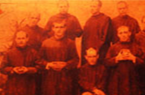
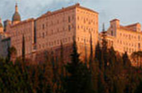

That in all things. God may be glorified
The story of San Beda College in Manila is richly wedded to the narratives of the Roman Catholic Church, Western civilization, and the Philippines' journey as a nation. San Beda College (El Colegio de San Beda) was established in 1901 by monks of the Ordo Sancti Benedicti (OSB) or Order of St. Benedict, also known as the Benedictines. Its founder, Benedict was born in the Umbrian town of Nursia, near Spoleto, Italy, in the waning years of the Roman Empire, AD 480. He hailed from a well-established family and was believed to have a twin sister, Scholastica.
 As a scholar in Rome, Benedict knew and appreciated the splendours of Roman culture. But he was disillusioned with the worldliness around him and found inspiration in Christianity which was slowly expanding its roots. Eventually, he fled to the mountains of Subiaco where he lived in a cave as a hermit known only to the holy monk Romanus who provided him with food and clothing. After undergoing a deep spiritual experience, Benedict soon became renowned for his holiness and attracted some followers. He established twelve monasteries at Subiaco and founded the Monastery of Monte Casino, a place about 80 miles Southeast of Rome. In this monastery, he wrote the Holy Rule, Regula Sancti Benedicti, an embodiment of the balance between prayer and work (Ora et Labora), and lived at Monte Cassino until his death on March 21, around 547 A.D.
The Abbey of Monte Cassino became the cradle of the Benedictine Order. From this great monastery, the Benedictine Order spread far and wide, becoming one of the chief formative factors in the development of the New Europe. The Benedictine monks became the pioneers of Christian civilization, preaching the Gospel, preserving the Scriptures and other sacred writings of the Church as well as other classical literary treasures, serving the poor and sick, and teaching religion and various crafts to the young. Their influence from the 6th to the 13th century was so great that historians called this period the "Benedictine centuries" and St. Benedict is acclaimed as the "Father of Western Monasticism". In 1964, Pope Paul VI declared St. Benedict as the “Patron of Europe.”